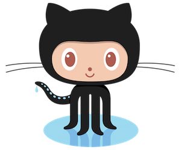

Assessments
Be Social - Results
Here is a sweet wordcloud representing our feelings about Laulima.



This is the first module, in which you’ll set up online accounts for hosting code and blog posts. Click on “Reading” for info and “Experiential Learning” for submission instructions.
Students will have public GitHub accounts.
Students will have a publicly-accessible blog.
Students will analyze and report on their personal development environment.
Here is a sweet wordcloud representing our feelings about Laulima.